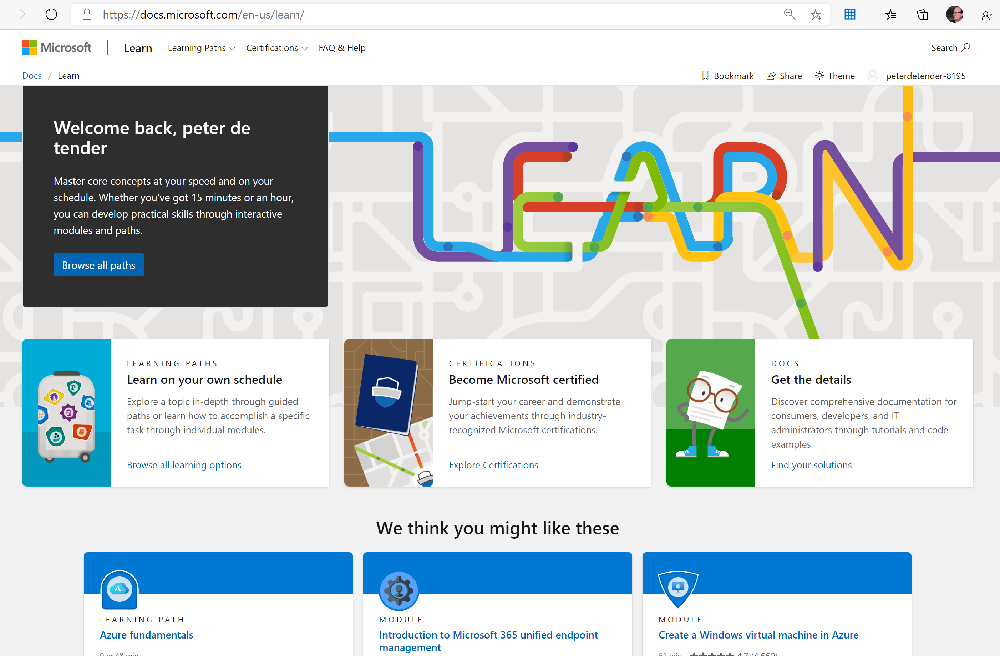

Things are going fast in the Azure world, and apparently exams are more and more following that pace. Before you start screaming and worrying, as you might be preparing for a current exam, let me share a bit about several steps happening before an exam becomes available.
Exam Objectives (OD)
For a long time, Microsoft Learning has based exams on “exam objectives”, which is typically a list of “services, features, activities” anyone taking the exam, should master. An easy example from the Exchange Server 2007 time frame could have been:
-
Understanding that Exchange Server relies on several Windows OS components like Internet Information Server, .NET Framework,… (services examples);
-
Knowing the different Exchange Server Roles, and how they relate to each other;
-
How to enable Unified Messaging;
-
What PowerShell command to use to repair an Exchange database;
…
so basically more like a “stand-alone” approach of testing your knowledge, but less focused on testing your skill set.
The same approach was about valid for the initial Azure exams (70-532, 70-533, 70-534/535); each exam tested you on a lot of services in the platform, how to deploy them, manage them,… but not always related to how they are being used “in the field”.
Job Task Analysis (JTA)
All of that got changed with the new Azure exams, as announced during Ignite conference 2018. A few months before the announcement, I was invited by Microsoft Learning to participate in “JTA - Job Task Analysis” workshops, together with several other SMEs (Subject Matter Experts), to brainstorm about how Azure components relate to a certain job role.
Easy said, taking the “Azure Administrator AZ-103” exam, we discussed on what are the core services in Azure, and what would you need to know about them, in order to relate to your job. Because in the end, there are quite a lot of services in Azure, which you probably hardly (or never) touch on as a typical Azure Administrator. The same goes for all the other job roles we identified (Administrator, Data Scientist, Developer, DevOps Engineer, Security Engineer, Solutions Architect,…). Based on the outcome of these JTA discussions, new exam questions were created, most of them being more relevant (and harder) to - again - a job role, instead of just testing you on the service or feature. Several Azure exams also got updated with “Performance based testing”, which means you need to perform a series of actual tasks, in a live Azure Portal. (e.g. deploy a Virtual Network, configure an Azure Backup job based on certain criteria, configure diagnostics logs,…), so - once more - testing your skill set, in relation to what you are assumed to know, when having that specific job role.
I personally liked this approach much better than the old system, where now the credential actually proves you have both knowledgeable (theoretical questions) and skill set (practical tasks) experience.
What will change, and why changing again?
As already touched on in the first paragraph, the Azure world in all its glory and capabilities, is changing dramatically. New features are coming out on a regular basis, existing services are getting better, more complete, and overall, the different services are easier to get integrated with each other. To keep up with the ever-changing demand in job role on top, it makes total sense the exams are getting updated on a regular basis as well.
The following list of Azure exams will get an update, but the old ones will remain for another 90 days after the new ones are getting released, as a transition period:
-
AZ-103 becomes AZ-104 (this update will be published in March)
-
AZ-203 becomes AZ-204 (this update will be published in late February)
-
AZ-300 becomes AZ-303 (this update will be published in March)
-
AZ-301 becomes AZ-304 (this update will be published in March)
Important to mention is that the exam (certification) title will not change, nor will anyone having the current credential, loose this credential. If you have the AZ-300 certification for example, it will remain valid until its expiration date, even with the AZ-303 being available.
Does this mean I can forget about everything I already studied on, and need to start all over?
Technically, the newly announced exams, will test you on “newer” updates out of the Job Task Analysis. This doesn’t mean that you will be tested on “newer” services or features only. One example I could think of, is Azure Containers and Kubernetes Services; these were not part of the exam objective domains in the AZ-103 today, but given the growth and popularity of these services, they might get included in the objective domain for the AZ-104. Although the services and capabilities have been in Azure for a longer time already.
Where can we find additional information related to these announced updates?
As always, the Microsoft Learn website is the best resource related to Microsoft exams, certification, Microsoft Official Courseware content and more. When all details are ready, they will be exposed on that learn portal immediately.
http://www.microsoft.com/learn

These new announced exams will also require some updates to several of the trainings I am delivering out of my current role as Azure Technical Trainer (ATT) within Microsoft. Time to go check on some updates, work on my updated stories, and fine-tune some cool demos and lab guide steps for my attendees. The changes will arrive fast if you ask me!
As always, don’t hesitate reaching out when having any questions on this topic or another.
Kind regards, Peter
https://azure.microsoft.com/en-us/resources/azure-strategy-and-implementation-guide-third-edition/
summarized as follows:
Get a step by step introduction to using Azure for your cloud infrastructure with this Packt e-book. Read the latest edition of the Azure Strategy and Implementation Guide for detailed information on how to start taking advantage of Azure cloud capabilities. Download this e-book to:
- Get an overview of Azure benefits and best practices for planning your migration.
- Make cloud architecture and design choices that best fit your organization.
- Learn how to manage and optimize your new cloud environment.
As always, I hope this book maps with your interests and helps in your journey to Azure. Do not hesitate reaching out or sharing your feedback,
/Peter